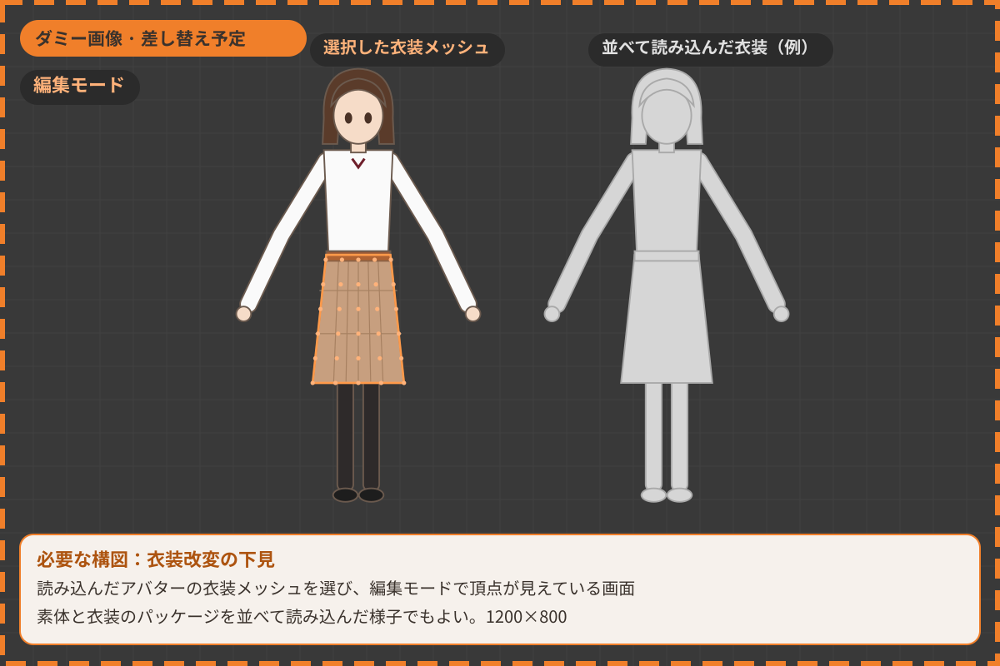
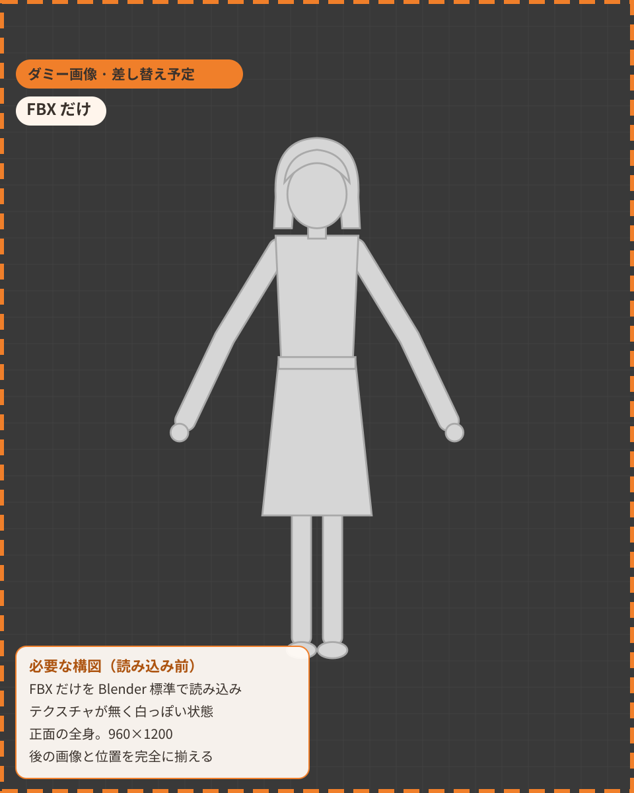
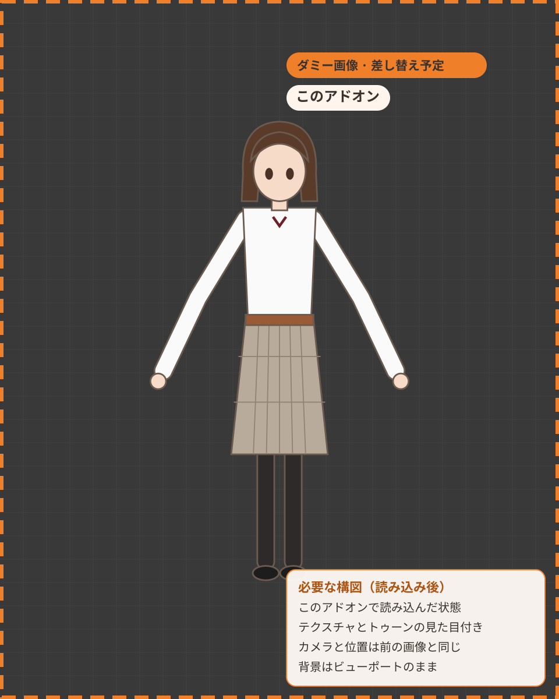
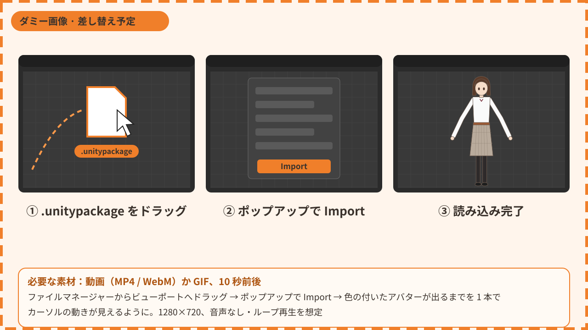
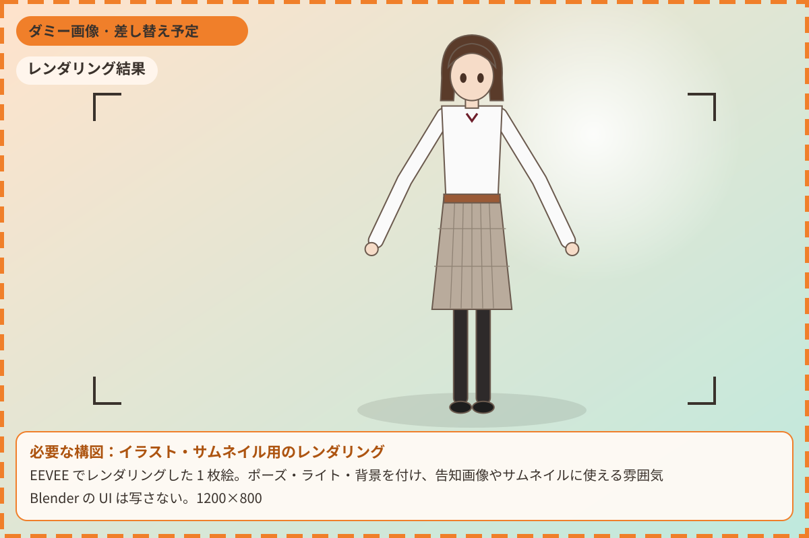
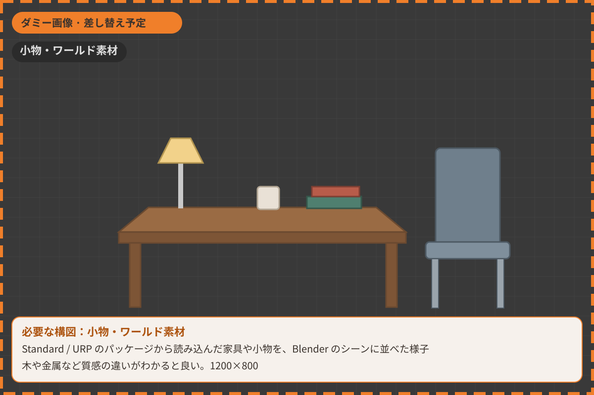
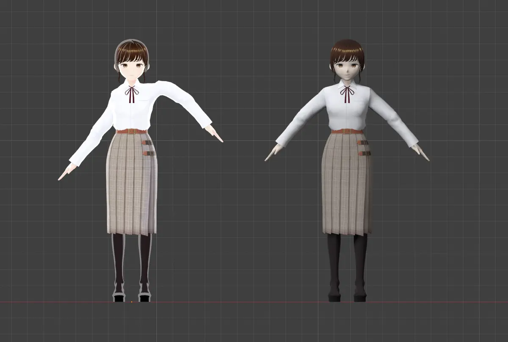
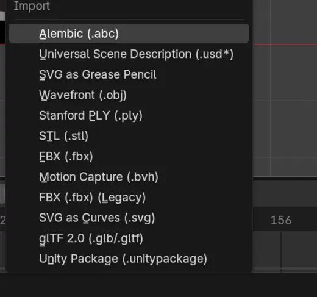
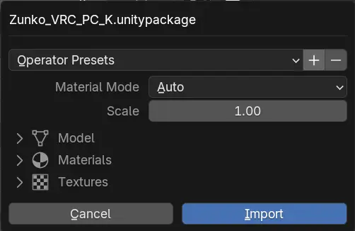

Check the shapes before you edit
Inspect outfit and accessory meshes in Edit Mode, or import a base avatar next to an outfit you bought. All without opening Unity.
Drag a .unitypackage from BOOTH or elsewhere* onto Blender. No Unity needed: bones and facial shape keys stay intact, and the materials come in looking close to lilToon or Poiyomi.
* Whether you may use or edit an asset in Blender depends on that asset's license. Please follow its terms.


Plain FBX import With this add-onUntil now, getting a purchased avatar into Blender to check or edit it usually meant a detour through Unity.
.unitypackage onto BlenderBones, facial shape keys, textures and materials all come in together. Drop several packages at once, such as a base avatar and an outfit.


Inspect outfit and accessory meshes in Edit Mode, or import a base avatar next to an outfit you bought. All without opening Unity.

Pose the avatar and render it in EEVEE for announcement images, thumbnails or a picture for social media, with the toon look intact.

Standard and URP materials are converted to Blender's standard shader, so furniture and props sold for Unity can go into your Blender scenes.
Whether you may edit an asset or publish renders of it depends on that asset's license. Check its terms first.
Other shaders are converted as far as their common setting names allow. Models can be FBX, OBJ, glTF, VRM or Collada.
Toon shaders such as lilToon come in with a toon look made for EEVEE, while Standard and URP come in as Blender's Principled BSDF. Want to render in Cycles? Switch later from the sidebar, no original package needed.
There are also Unlit, which ignores lighting, and Names Only, which creates empty materials with the right names.

Works with Blender 4.2 and later. Either way of installing gives you the same add-on.
Drag the downloaded zip onto the Blender window and confirm the install. You can also use Install from Disk in the menu at the top right of Preferences > Get Extensions.
In Blender, open Edit > Preferences > Get Extensions > Repositories, click +, choose Add Remote Repository and paste this URL.
{{BASE_URL}}/index.json
Then search for Unity Package Importer in Get Extensions and click Install.
Drag a .unitypackage onto the 3D Viewport, or use File > Import > Unity Package. Press Import in the popup and the package loads. Several files at once are fine.


No. You don't need to install Unity or Unity Hub. The add-on reads the package contents itself.
No, it is free software under the GPL-3.0 license, and the source code is on GitHub.
Blender 4.2 and later, on Windows, macOS and Linux.
Avatars using common shaders such as lilToon, Poiyomi and MToon are supported. Other shaders are converted as far as their common setting names allow.
Unity shaders and Blender nodes work differently, so the result will not match Unity exactly. Expect to finish the look in Blender.
This add-on only imports the files; it does not grant you any rights to the asset. Whether you may edit it, publish pictures or videos of it, or use it outside Unity is decided by each asset's license. Check the terms on the store page or in the package before you use it.
The goal is a model that looks right in Blender, so these are not imported:
No code from the package ever runs. Only model files and the textures their materials use are written to disk. Bundled .blend files can carry Python, so they stay closed unless you opt in for that import. File paths and extracted sizes are checked before anything is written.
FBX and image decoding are done by Blender itself, so keep Blender on the latest LTS. The full notes are in the README.
The "Unity Package" tab in the sidebar (N key) shows what was imported, how each material was resolved, and any warnings. If that does not help, please let us know in GitHub Issues.
Curious how it works under the hood? The developer notes are in DESIGN.md.